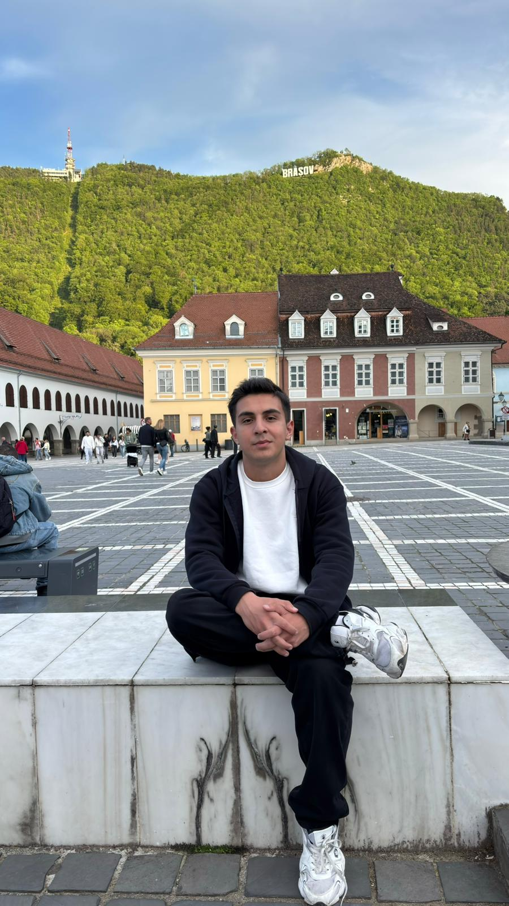
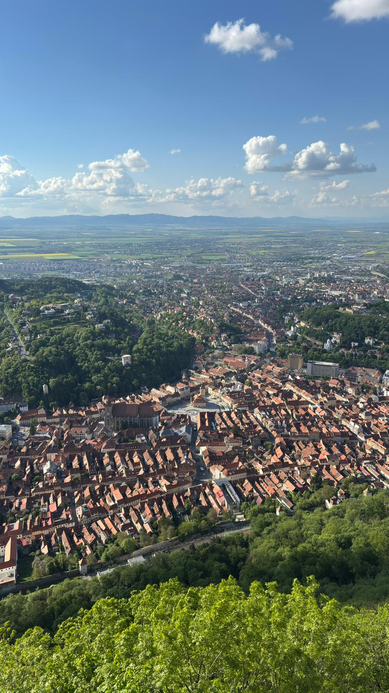
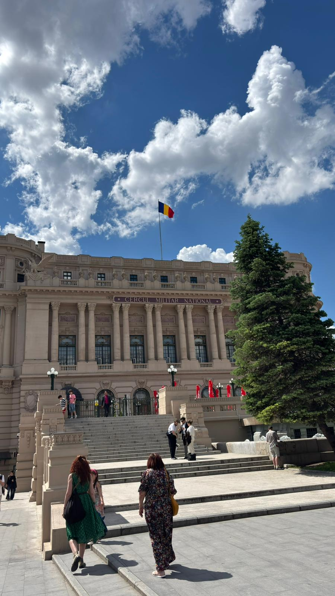
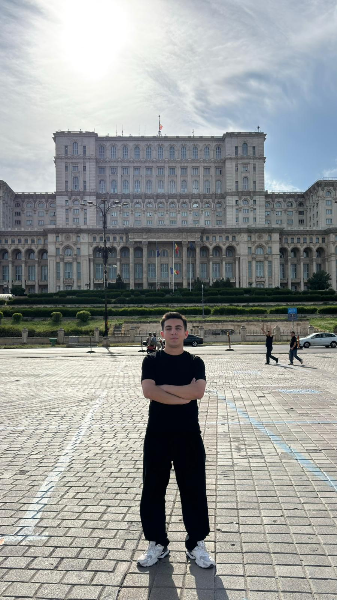

Romania
Romania was one of the countries I visited during my Erasmus journey, and I had the chance to explore both Bucharest and Brașov. Bucharest did not impress me as much as I expected, especially for a capital city. I felt that there were not many interesting things to do, although I really liked the Palace of the Parliament. Its size and architecture made it one of the most memorable landmarks I saw in Romania. I enjoyed Brașov much more. Although it is a relatively small city, it has a charming atmosphere and beautiful surroundings. While I was there, I also visited two famous castles near the city: Bran Castle and Peleș Castle. Bran Castle felt a bit ordinary to me, but its history made it worth visiting. Peleș Castle, on the other hand, was much more impressive. Surrounded by nature and standing proudly among the mountains, it was one of my favorite places in Romania. Overall, Brașov and Peleș Castle left a much stronger impression on me than Bucharest and were the highlights of my trip to Romania.
Photo Gallery




Cities Visited
- Bucharest
- Brașov
Favorite Place
Peleș Castle
My Rating
7/10 ⭐